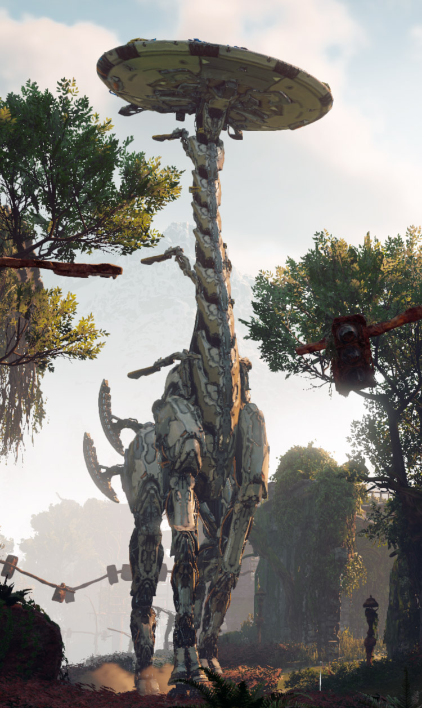

DEUS EX: MANKIND DIVIDED - A CRIMINAL PAST
Going deep undercover has always been an element of the Deus Ex series that's been just on the periphery of what players could do in-game. There were other characters you would encounter that were operatives working as the inside man of a criminal organization, but Adam Jensen himself was always just a facilitator. "A Criminal Past" finally gives players the chance to go under deep cover to rescue an ally that's gone radio silent in one of the most secure augmented prisons on the planet. Combining some excellent stealth gameplay, lots of exploration, and some terrific plotting, it's peak Deus Ex.
When we last saw Adam Jensen, he'd just managed to save the future of augmented rights and prevented a radicalized group of augmented humans from enabling the Human Restoration Act to be approved (at least in our save anyway). "A Criminal Past," the second of two downloadable add-ons that flesh out Jensen's history a bit more, picks up not long after the conclusion of the core game --- though it focuses on Jensen reflecting back at his first mission for TF-29.
Right out of the gate, it's clear not everything is on the up and up at the "Pent House," the nickname given to Arizona's Penley T. Housefeather Correctional Facility. Jensen is under disguise as a member of the Junk Yard, a criminal organization that harvests the aug parts from dead inmates at this facility. They don't always wind up dead for legitimate reasons though, which is one of the mysteries you'll be tasked with solving while undercover. The core reason for infiltration though is to meet with "Guerrero," the agent that went dark while in lock-up. There are rumors of a terror attack pending, and Guerrero is the only agent who can help verify the claims, even if they are slightly dubious.

Deus Ex: Mankind Divided was already one of our favorite games of last year, but both add-ons in Jensen's Stories have kept the game feeling fresh long after release. "A Criminal Past" was a bit more enjoyable than "System Rift" if only because "System Rift" took place in the same confines as the main campaign, and this new DLC lets us see someplace new and different we haven't been exploring for hours on end already. Whatever Square and Eidos have in store for Deus Ex in the future, "A Criminal Past" and Mankind Divided show there are plenty of ways to keep us coming back for more.
Other Reviews
RESIDENT EVIL 7: BIOHAZARD

NIOH

HORIZON ZERO DAWN
YAKUZA 0